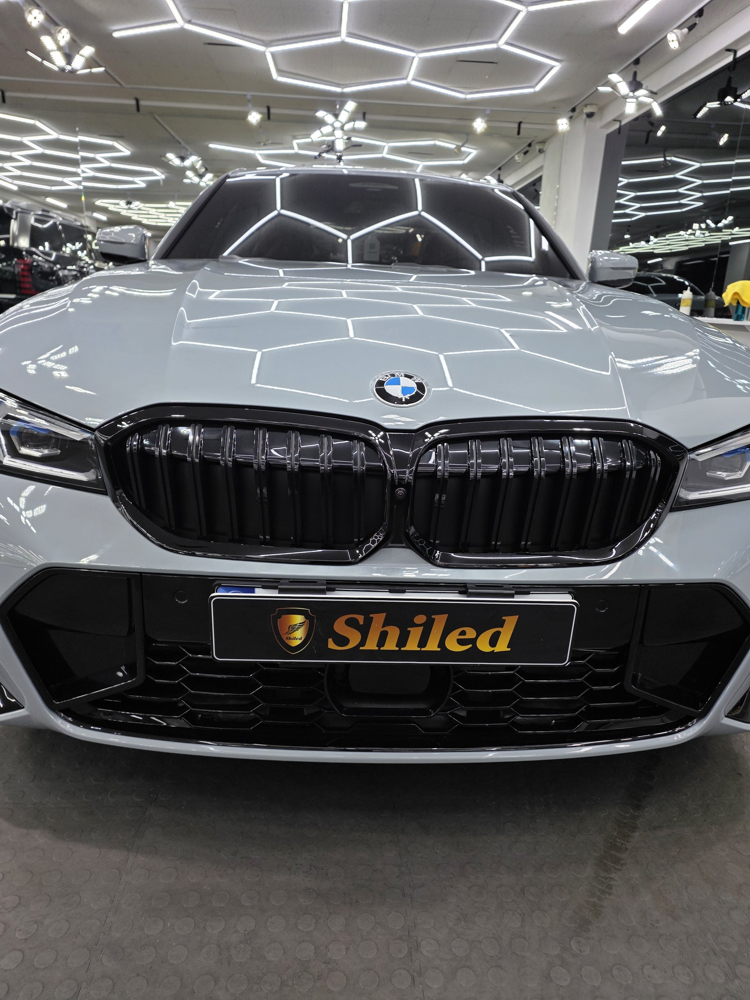
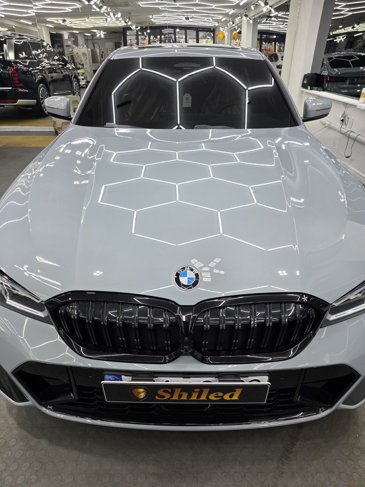
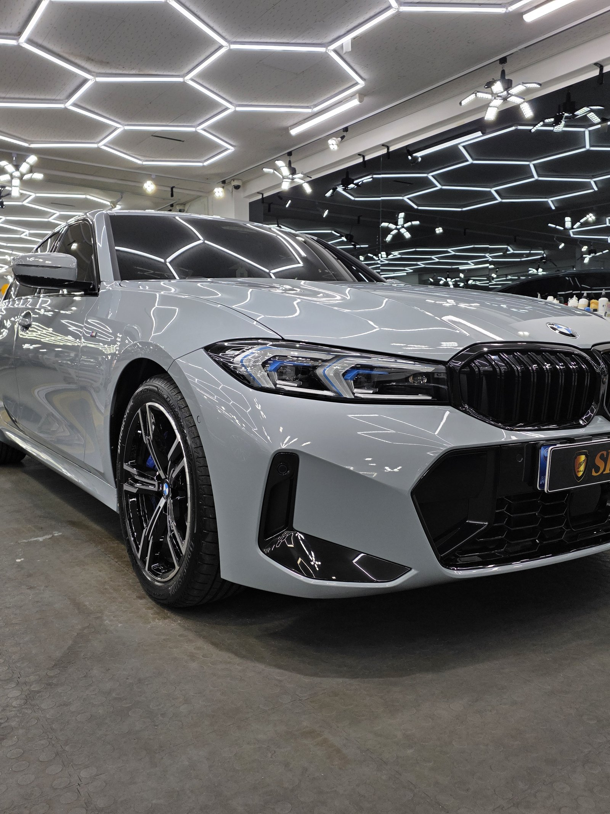
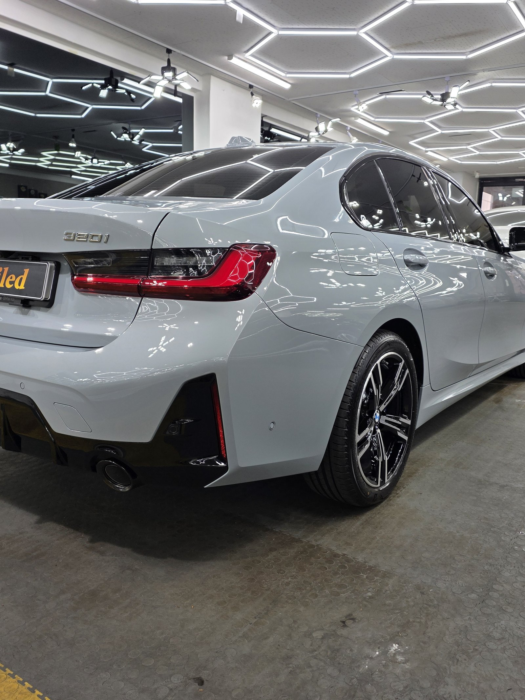
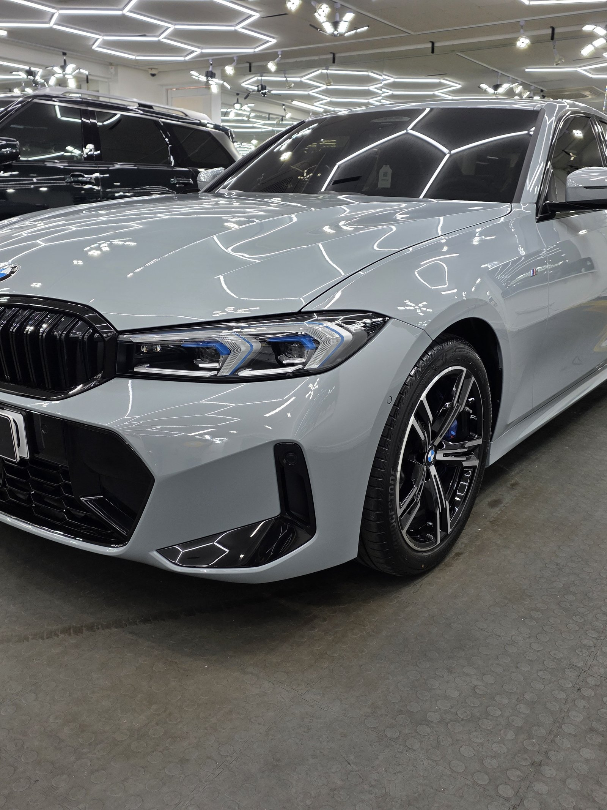
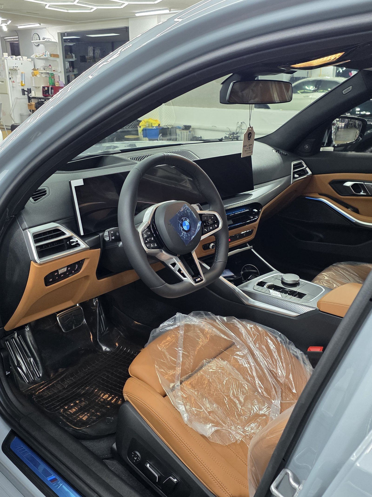
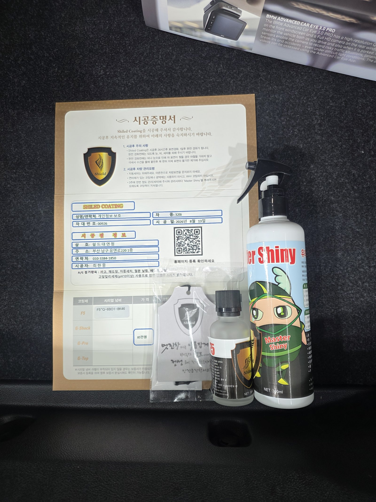

BMW 320i 그레이입니다. 아직 출고 전, 새 차입니다.
부산 유리막코팅으로 이 차는 출고 전에 F5를 올렸습니다.

키드니 그릴 주변은 왜 더 꼼꼼히 봐야 하나
BMW 특유의 키드니 그릴 테두리와 헤드램프 경계는 각도가 계속 꺾이는 자리입니다.
패널처럼 넓고 평평한 면은 도포량 조절이 쉽지만, 그릴 라인이나 램프 경계처럼 좁고 꺾인 부위는 코팅제가 한쪽으로 밀리거나 뭉치기 쉽습니다. 부산 유리막코팅 시공에서 이런 자리는 패널보다 몇 배 더 천천히, 결을 따라 붓 터치하듯 발라야 얼룩 없이 마무리됩니다.

그레이 신차에 왜 F5인가
그레이는 무채색이라 코팅 없이는 색감이 납작하게 보이기 쉬운 색입니다.
여기에 F5를 올리면 표면에 깊이가 더해져, 같은 그레이라도 입체적인 발색이 살아납니다. 매장 조명이 도장면 위로 또렷하게 맺히는 것도 그 결과입니다. 코팅제는 대표가 화학공학 전공으로 직접 개발·제조한 제품입니다.

기술자의 팁
신차라고 바로 코팅을 올리지 않습니다. 운송·보관 중 묻은 미세 오염을 디테일링 세차와 탈지로 걷어낸 뒤에 올립니다. 깨끗한 바탕 위에 올려야 코팅이 제대로 밀착합니다.


외부만이 아니라 안까지
출고 전 차량은 안팎 컨디션을 함께 정리합니다.
실내는 아직 시트에 보호 커버가 씌워진 신차 그대로입니다. 외부 도장은 F5로 발색을 잡고, 인도까지 깨끗한 상태로 관리합니다. 부산 남구 대연동 쉴드광택은 유엔로220에서 신차 출고 전 시공을 상시 접수합니다.

시공증명서를 함께 드립니다
모든 시공 차량에 시공증명서를 드립니다.
차종·시공일·코팅제 시리얼 번호가 적혀 있고, 홈페이지에 등록해 보증을 받으실 수 있습니다. 이 차는 F5 코팅으로 기록돼 있습니다.

차종·시공일·코팅제 시리얼이 기재된 시공증명서
자주 묻는 질문
Q. 신차도 유리막코팅이 필요한가요?
A. 필요합니다. 출고 직후 클리어코트가 가장 깨끗할 때 코팅해야 오염과 스크래치를 원천 차단할 수 있습니다.
Q. BMW 키드니 그릴 주변은 왜 더 꼼꼼히 봐야 하나요?
A. 그릴 테두리와 헤드램프 경계처럼 각도가 꺾이는 라인은 코팅제가 얇게 밀려 나가거나 뭉치기 쉬운 자리입니다. 결을 따라 천천히 발라야 얼룩 없이 마무리됩니다.
Q. 그레이 신차에는 어떤 코팅이 좋나요?
A. 이 차는 F5로 진행했습니다. 그레이는 코팅 없이 색감이 납작해 보이기 쉬운데, F5가 표면에 깊이를 더해 입체적인 발색을 만듭니다.
Q. 신차코팅도 전처리를 하나요?
A. 합니다. 신차라도 운송·보관 중 미세 오염이 묻습니다. 디테일링 세차와 탈지로 표면을 정리한 뒤 코팅을 올려야 제대로 밀착합니다.
Q. 쉴드광택 위치와 예약은 어떻게 하나요?
A. 부산 남구 유엔로220 1F 쉴드광택입니다. 예약·상담은 010-3384-1850, 대표 최한중이 직접 상담하고 책임 시공합니다.
새 차일수록 시작점이 다릅니다. 가장 깨끗할 때 입혀두십시오.
제품을 직접 만드는 사람이 직접 시공합니다.
유리막코팅을 고민 중이시면 편하게 연락 주십시오.
어떤 차를 타냐보다 어떻게 타냐가 중요합니다~!
시공 중에는 전화를 받지 못할 때가 많습니다.
카카오톡으로 차종과 원하시는 시공을 남겨주시면 확인 후 답변드립니다.
쉴드광택 · 부산 남구 유엔로220 1F · 대표 최한중